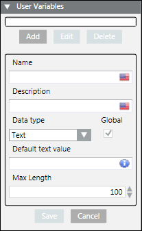

User Variables
This section describes procedures for creating, updating, and deleting a User Variable.
Create a User Variable
- Select Applications > Notification > Notification Templates.
- The list of notification templates displays.
- Select the required Message Template > Content Editor.
- Open the Text Content expander.
- Open the User Variables expander.
- Click Add.
- The User Variables dialog box displays.

- Enter the Name and Description of the user variable.
- Select the Data Type of the user variable from the drop-down list.
NOTE: The Default value of the user variable depends on the selected data type. For example, if the selected data type is Time, then the user is prompted for a default time value along with the display format. Please refer to the Data Types table below for more information on data types. - Select or enter the corresponding Default value.
- Select Global check box to share the user variable and make it available for use in other message templates.
NOTE: If the check box is not selected, it means the user variable is private to the current message template. A user variable can also be made global at a later point in time. - Click Save.
- The user variable is saved.
Update a User Variable
- At least one message template with user variables is configured.
- Select Applications > Notification > Notification Templates.
- The Notification Templates list displays.
- Select the message template that contains the user variables to be updated.
- Select the Content Editor tab.
- Open the Text Content expander.
- Open the User Variables expander.
- Select the variable to be updated.
- The details for the selected variable displays.
- Click Edit.
- Update the required fields.
NOTE 1: When editing a user variable marked as Global, any applied changes will affect all other message templates that contain the updated user variable.
NOTE 2: For more information on the fields, refer to the Creating a User Variable. - Click Save.
- The user variable is saved with the updated details.
Delete a User Variable
- Select Applications > Notification > Notification Templates.
- The Notification Templates list displays.
- Select the message template from which the user variable needs to be deleted.
- Select the user variable to be deleted.
- Click Delete.
- A confirmation message displays.
- Click OK.
- The user variable is deleted.
NOTE 1: If a user variable that is not used in any message template is deleted, the corresponding user variable is deleted from the system.
NOTE 2: If a user variable that is marked as Global is deleted from a message template, then the scope of the user variable is changed from global to template-specific, which means that the user variable is removed from the current message template, but remains as a template-specific user variable in all other message templates that use it.